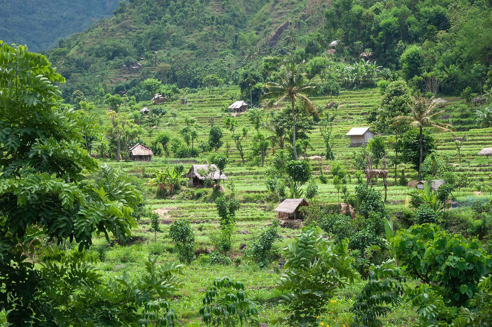
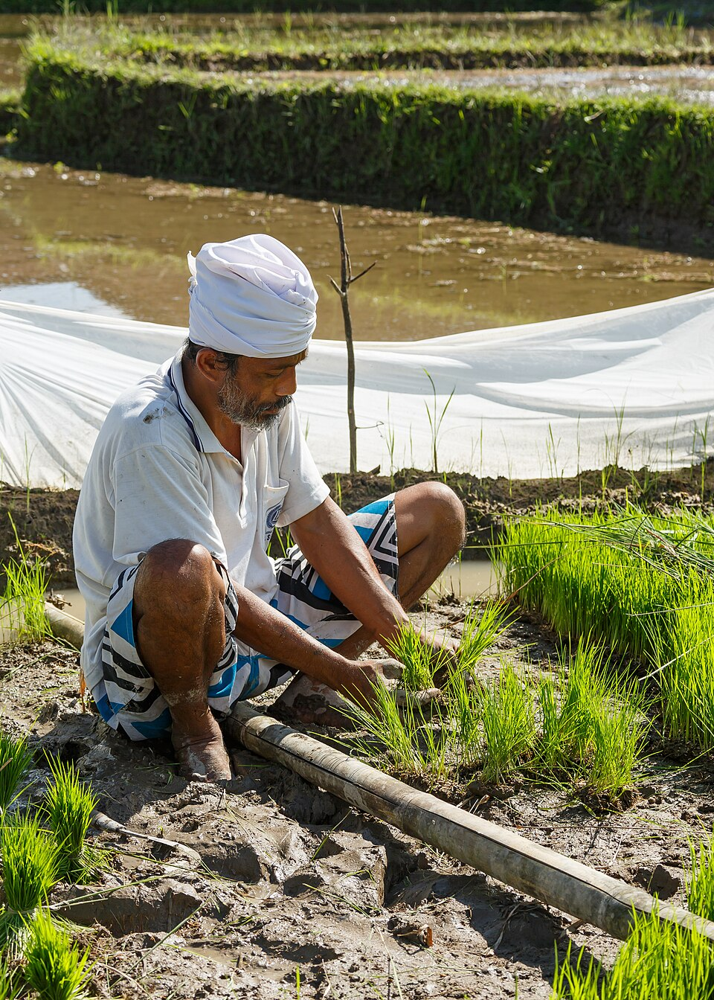
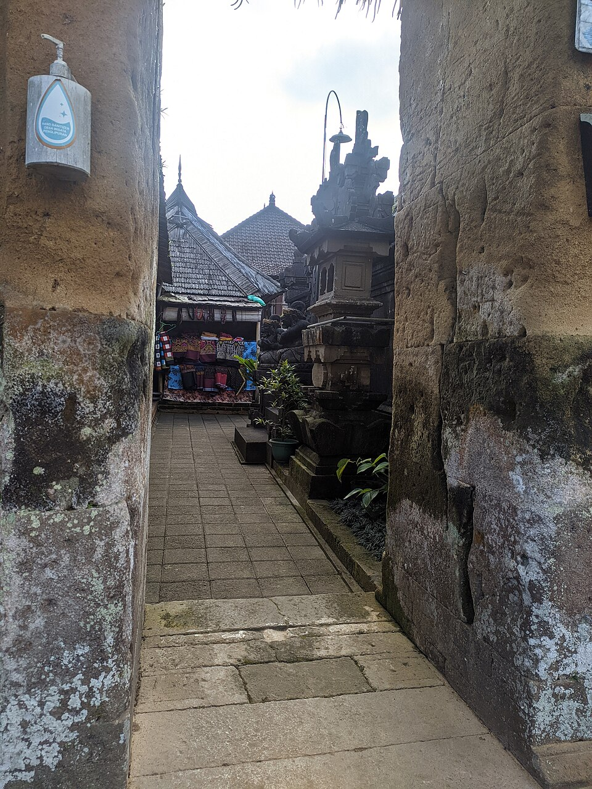
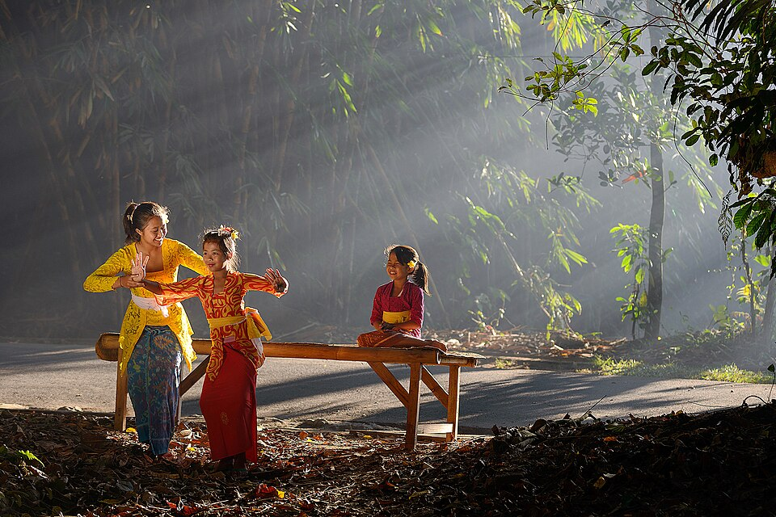
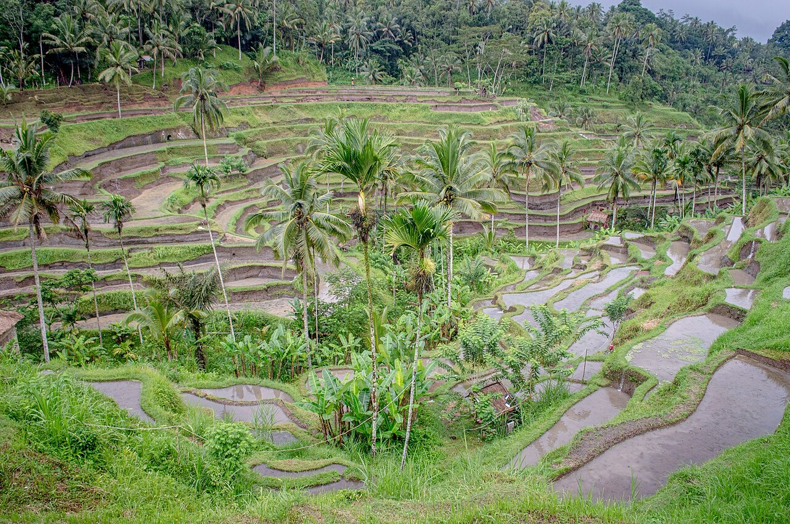

Sehari pelan di tengah sawah
Di Desa Tirta Asri, pagi dipakai menanam padi, siang menyusuri lorong desa, dan sore menonton anak-anak berlatih tari.
Mau mulai dari mana?

Turun ke sawah
Petani mengajak Anda menanam bibit padi saat matahari belum tinggi. Kaki pasti kena lumpur, dan memang di situ serunya.
- Mulai pukul 07.00, sekitar 2 jam
- Bawa baju ganti dan sandal

Menyusuri lorong desa
Berjalan kaki di antara pekarangan rumah, makan siang di warung warga, lalu mampir ke kios kerajinan.
- Makan siang di Warung Bu Sari
- Sediakan uang tunai

Menonton latihan tari
Anak-anak desa berlatih bersama guru mereka. Duduk di pinggir, tonton sampai selesai, dan minta izin dulu sebelum memotret dari dekat.
- Setiap Sabtu dan Minggu, pukul 16.00
- Bebas biaya, boleh memberi sumbangan sanggar

Sudah punya tanggal?
Pilih paket atau penginapan, lihat tanggal yang masih kosong, lalu pesan langsung di sini. Kode booking muncul seketika.
Yang membuat tamu kembali
Tirta Asri bukan taman wisata. Warganya tetap bekerja seperti biasa, dan Anda diajak ikut.

Sekitar 180 keluarga tinggal di desa ini. Sebagian besar mengolah sawah berundak yang airnya diatur bersama sejak lama lewat sistem subak.
- Dipandu warga sendiri, bukan agen perjalanan
- Uang tiket masuk ke kas desa dan perawatan irigasi
- Rombongan dibatasi 60 orang per hari agar desa tetap tenang
Contoh satu hari di sini
- 07.00
Tiba dan minum kopi
Pemandu menyambut di balai wisata, lalu menjelaskan rute hari itu.
- 07.30
Turun ke sawah
Menanam bibit atau memanen, tergantung musim. Baju ganti disimpan di balai.
- 10.30
Kelas pilihan
Membatik, menganyam, atau memasak serabi bersama warga.
- 12.30
Makan siang di Warung Bu Sari
Nasi sayur urap dan lauk dari kebun desa.
- 14.00
Menyusuri lorong desa
Jalan kaki lewat rumah adat, pura, dan kios kerajinan.
- 16.00
Menonton latihan tari
Pada akhir pekan, anak-anak berlatih di bawah pepohonan.
Oleh-oleh dari desa
Semuanya buatan warga dan dijual di kios sepanjang jalan utama.
- Kain batik tulisSanggar KencanaMulai Rp 185.000
- Tampah dan kalo bambuPerajin Dusun TengahMulai Rp 25.000
- Kopi tubruk desaKebun warga, 200 gramRp 40.000
- Beras merah subakKemasan 2 kilogramRp 50.000